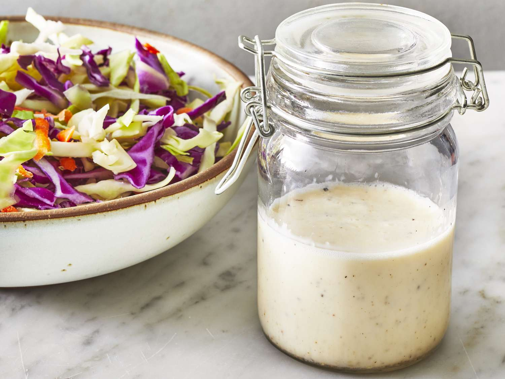

Coleslaw Dressing

Delicious coleslaw dressing recipe to brighten your day!
With minimal ingredients and prep work, this top-rated coleslaw dressing is your new summer potluck secret — but don't take it from us, take it from over 1,500 reviewers who gave it a five-star rating. You can shred your own cabbage and carrots or transform store-bought coleslaw mix into a refreshing and creamy side dish with this dressing.
Ingredients
- ½ cup mayonnaise
- 2 tablespoons white sugar
- 1 ½ tablespoons lemon juice
- 1 tablespoon vinegar
- ½ teaspoon ground black pepper
- ¼ teaspoon salt
\
Steps:
- Gather all ingredients.
- Whisk mayonnaise, sugar, lemon juice, vinegar, pepper, and salt together in a bowl until smooth and creamy.
- Store in an airtight container.